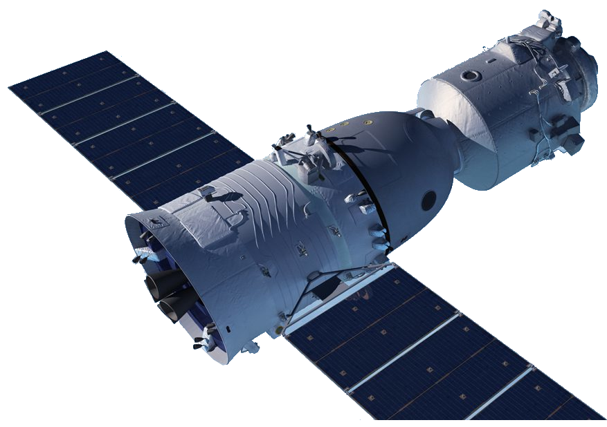
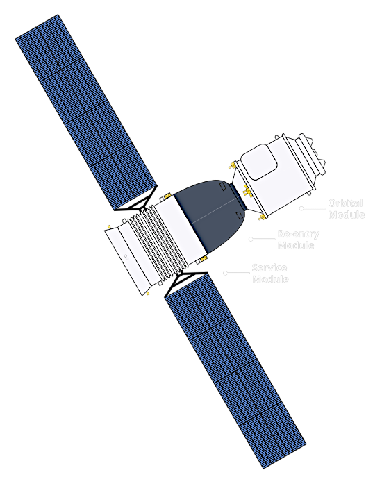
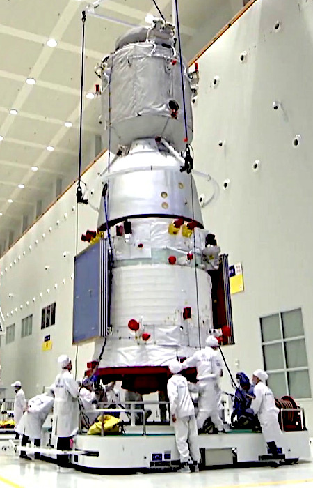
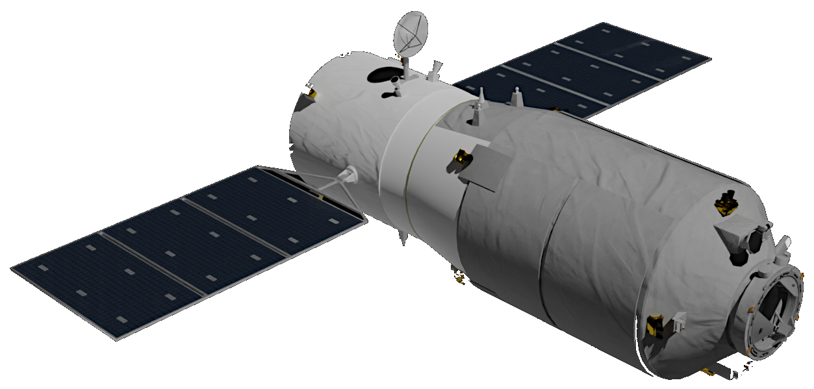
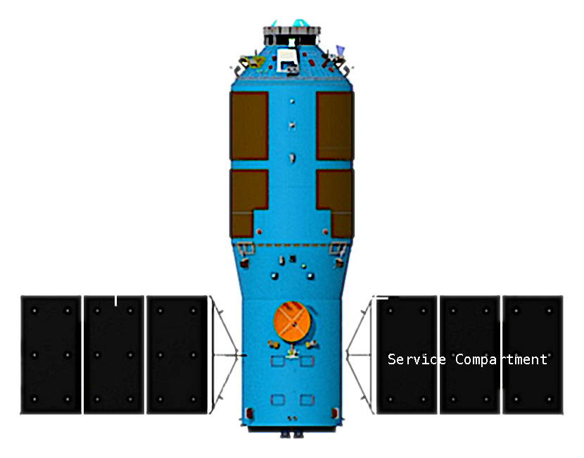
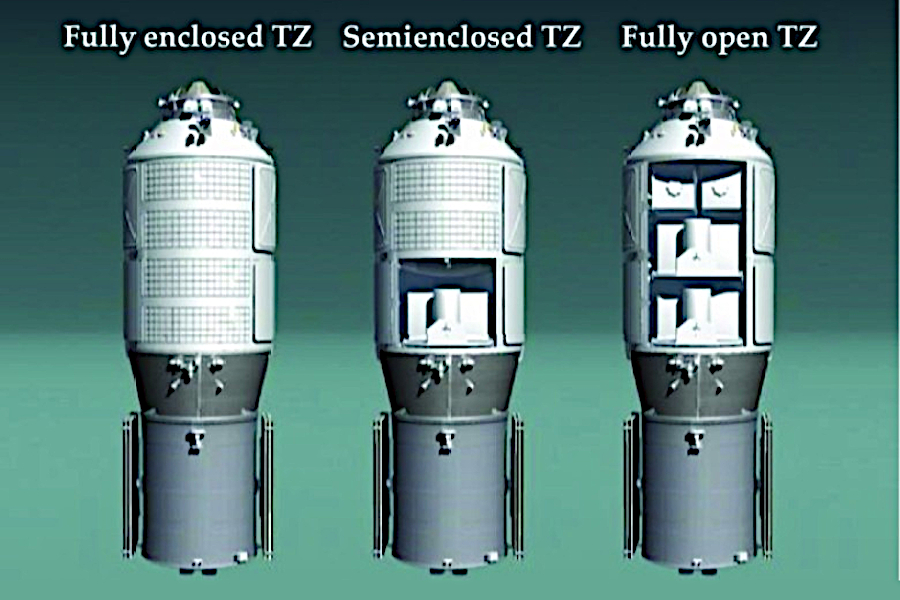
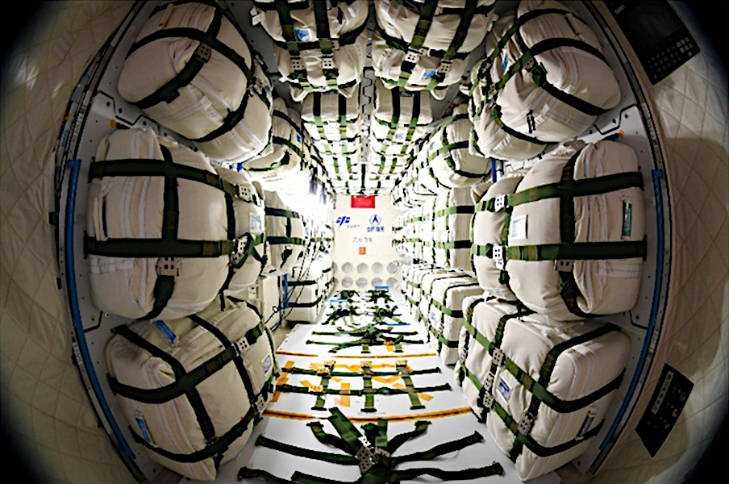
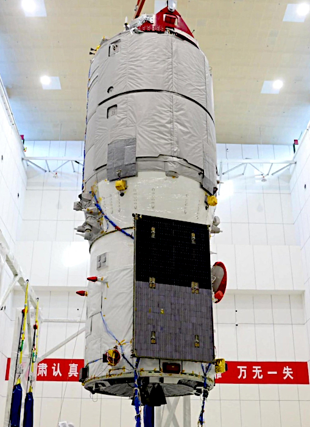

The Tiangong space stations are themselves spacecraft, orbiting the Earth at an altitude of around 350km to 400km. The first two single module stations Tiangong-1 and 2 were launched complete by a carrier rocket, the chinese Long March 2F/T, and used their own power to reach orbit.
The current Tiangong Space Station has three main modules which were launched separately by carrier rockets, the chinese Long March 5B, and docked together sequentially in orbit.
Two type of spacecraft were developed by the Chinese space program, mainly to support the Tiangong stations, a crewed vehicle and an un-crewed automated cargo vehicle.
1. Shenzhou crewed craft - Used to transport crew to the stations and back to Earth. Normally launched on a Chinese Long March 2F/G carrier rocket.
2. Tianzhou cargo craft - Used to transport cargo to the stations, but is destroyed at the end of it's mission and does not return to Earth. Normally launched on a Chinese Long March 7 carrier rocket.
Reference: Wikipedia - Shenzhou | Long March 2F | Tianzhou | Long March 7
China Space Report - Shenzhou | Tianzhou | Long March 7 | Encyclopedia Astronautica - Shenzhou
Space Partner Journal - Tianzhou
Shenzhou's design and operation is based on the Russian Soyuz-TM crew craft, but larger and modernized. Shenzhou, like Soyuz, is composed of three main modules:

(Click image to enlarge)
1. Orbital Module - Pressurised module for additional living and storage space during orbit,
2. Re-entry - Pressurised module which carries the crew during launch and reentry,
3. Service Module - Un-pressurised section responsible for propulsion and power.
During launch the spacecraft is encased within a fairing and fitted with a launch escape tower fitted with six rocket motors: four main escape motors, a pitch motor and a separation motor.
The three module design is based on the principle of minimizing the amount of material to be returned to Earth. The Orbital and Service modules are jettisoned before re-entry so that only the Re-entry module requires heat shielding. This increases the space available in the spacecraft without increasing weight due to shielding.

The cylindrical shaped Orbital Module is at the front of the spacecraft and contains the Chinese spacecraft docking mechanism which is based on the Androgynous Peripheral Attach System (APAS). The module also contains space for experiments, crew-serviced or crew-operated equipment, and in-orbit habitation.
The Orbital module is connected to the Re-entry module via a 65 cm diameter cylindrical hatch, which is sealed off during ascent, rendezvous docking, and re-entry. A large cylindrical hatch located on the side the module allows the crew to enter the spacecraft before launch, and can also be used for the astronauts to exit and re-enter the spacecraft during EVA.
The bell shaped Re-entry module is attached to the aft of the Orbital module and the forward end of the Service module. Its shape is a compromise between maximizing living space and allowing for some aerodynamic control upon reentry.
The module contains Soyuz-style moulded seats for up to three crew members for use during ascent, rendezvous docking and re-entry. It is the only part of the spacecraft to return to Earth. It also contains the flight instrument panel, controls, periscope, communications system and two windows for the crew to observe the outside.
The module is fitted with eight (in four pairs) 5 N control engines, including 2 pitch/yaw thrusters, 2 translation thrusters, and 4 roll thrusters to maintain its flight status during re-entry. It is fitted with five parachutes: a pilot chute, a second pilot chute, a drogue chute, a main parachute and a backup parachute. These are deployed from the altitude of 10,000 m.
The heat shield is jettisoned before landing so that the four landing rockets at the bottom of the module could fire to allow a soft-landing.

The cylindrical shaped Service module is attached to the rear of the Re-entry module and is jettisoned during re-entry to expose the Re-entry modules's heat shield. It contains equipment required for the functioning of the spacecraft; including life support, navigation, communications, flight control, thermal control, power systems, propulsion systems, as well as batteries, oxygen tanks, and propellant tanks.
Power in orbit for Shenzhou 1 to 8 was generated by two pairs of solar panels with a total area of over 40 m2, one pair on the service module and the other pair on the orbital module. From Shenzhou 9 onwards the panels were removed from the orbital module to allow clearance when docking with the space station.
The propulsion system consists of four high-thrust main engines and 24 smaller-thrust control vectors. The four main engines are located at the base of the Service module.
Tianzhou automated cargo spacecraft (TZ) was developed from China's first prototype space station Tiangong-1 and is almost identical in appearance and size. It was first tested by docking with the Tiangong-2 station and is now used to resupply the modular Tiangong station.

(Click image to enlarge)
Tianzhou consists of three main sections:
1. Cargo Compartment - Pressurized, semi-pressurized and unpressurized cargo areas and is able to transport airtight cargo, large extravehicular payloads and experiment platforms,
2. Transition Section - Un-pressurised, connecting the Cargo and Service compartments.
3. Service Compartment - Un-pressurized, contains propulsion, power, life support, and communications systems.

The cylindrical shaped Cargo Compartment is at the front of the spacecraft and is similar to the Experimental module of the Tiangong-1 and 2 stations. The forward end contains an androgynous docking mechanism to connect to the station. It features an improved second-generation docking system, capable of the faster 6-hour docking procedure. Automatic rendezvous and docking uses radio beacons, transponders, communication antenna, UHF radar, laser rangefinder, and an electro-optical tracking system.
Liquid propellants can be transferred through 4 refuelling nozzles on the docking port.

The Cargo compartment is surrounded by pipes designed to conduct heat from internal systems to an external radiator. Equipment and supplies are packed in bags and strapped to wall-mounted racks and shelves inside the compartment, with a small corridor in the middle to allow movement of the crew from the station.
Tianzhou is equipped with an improved dual narrow/wide-band data communication terminal, which provides extra redundancy in tracking and communications and an improved Control Moment Gyroscope (CMG) platform for better navigation and orbit insertion accuracy.

In a typical mission, Tianzhou can carry over 100 bags of equipment and supplies, including an EVA space suit, a soft water tank and a rigid water tank, a pair of oxygen canisters, and a pair of nitrogen canisters, experiment packages and about 2,000 kg of liquid propellants (both fuel and oxidizer), to be used for an in-orbit refuelling procedure. In addition, the spacecraft also carried 13 experiment packages.
Behind the Cargo compartment is a 1.1 m-long transition section, tapered from 3.35 m diameter of the Cargo compartment to the 2.25 m diameter of the aft service compartment. The section houses the nitrogen and oxygen tanks used for environmental control.

The cylindrical shaped Service Compartment has been derived from the Shenzhou service module and is connected to the aft of the Cargo compartment by the Transition Section. The Service compartment has an improved 2nd-generation 490-N dual-chamber high-expansion-ration main engine, as well as 25-N, 120-N and 150-N control thrusters for pitch/yaw and roll control.
A pair of solar array wings are attached to the Service Compartment. These have a total span of about 23 m and can be rotated to obtain maximum solar exposure regardless of spacecraft attitude.
The table below lists the general specifications of the Shenzhou and Tianzhou spacecraft:
| Item | Shenzhou Crew Craft | Tianzhou Cargo Craft | ||||||
| Orbital Module | Re-entry Module | Service Module | Complete Craft | Cargo Compartment | Transition Section | Service Compartment | Complete Craft | |
| Launch Mass (kg) | - | - | - | 8,130 | - | - | - | 13,500 (Loaded) |
| Orbital Mass (kg) | 1,500 | 3,240 | 3,000 | 7,800 | - | - | - | 8,000 approx. |
| Length (m) | 2.8 | 2.5 | 2.94 | 9.25 | 5 | 1.1 | 3.3 | 10.6 |
| Diameter (m) | 2.25 | 2.52 | 2.8 | 2.8 | 3.35 | Varies | 2.5 | 3.35 |
| Habitable Volume (m3) | 8 | 8 | 0 | 15 | 15 | 0 | 0 | 15 |
| Average Power (kW) | 0.5 | - | 1.5 | - | - | - | - | - |
| Design Life (days) | - | 20 | 20 | - | - | - | - | - |
{kind=link}
{kind=link}
{kind=link}
{kind=link}
{kind=link}
{kind=link}
{kind=link}
{kind=link}
{kind=link}